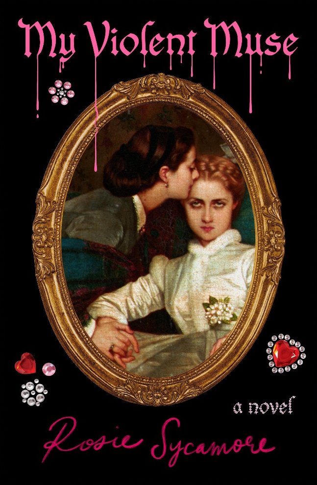
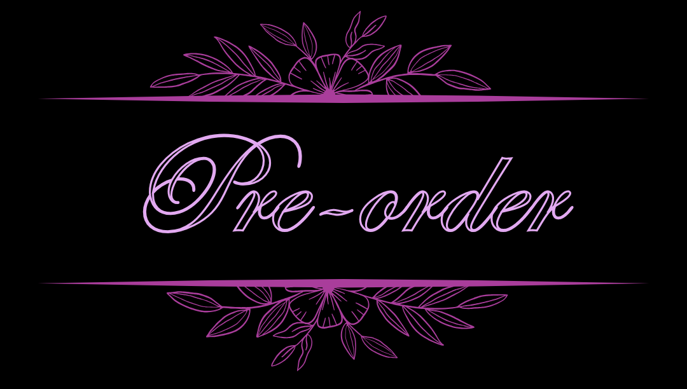
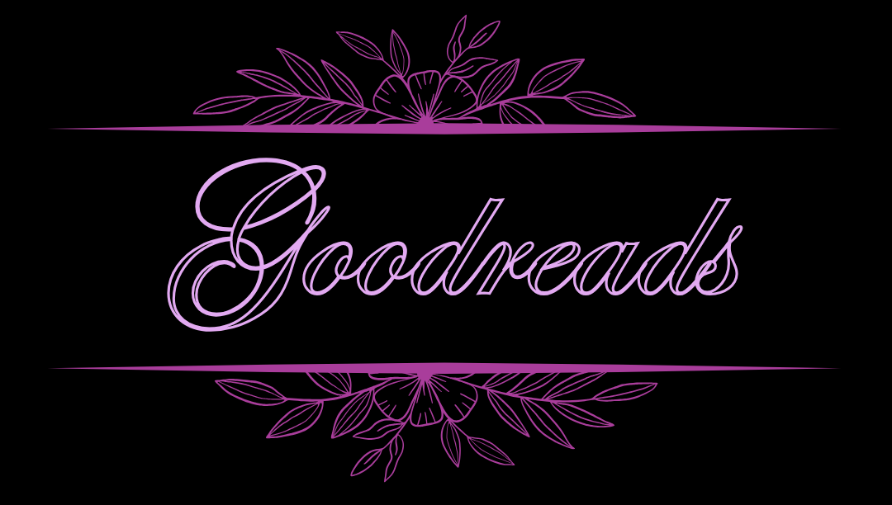
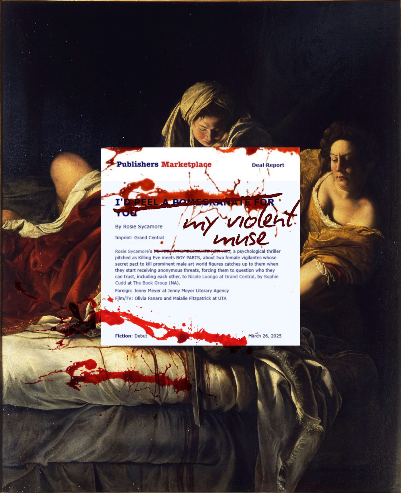
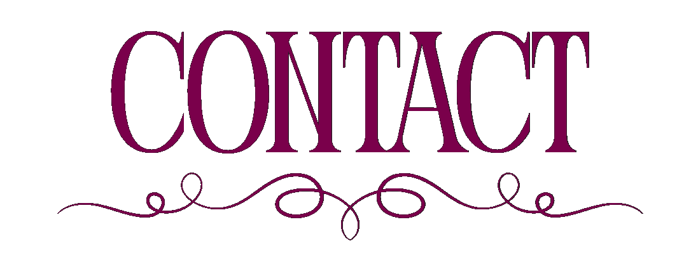

Morello is a nobody: a homeless orphan and starving artist with nothing but impossible dreams of escaping obscurity. Then Florence appears—dazzling, dangerous, and offering Morello a way out, on one chilling condition: each year, they must hunt and kill one of the art world’s predatory men. In return, Morello will inherit a life of privilege and promise.
Together, they transform revenge into twisted performance art, staging each murder with meticulous, theatrical flair. But when Morello falls for Jude, a wealthy art student who offers her a glimpse of a life sans murder, her carefully curated reality begins to unravel—and she’s one lie away from losing everything she’s killed for. With the body count rising and anonymous threats closing in, Morello must finally ask herself: is the cost of vengeance ever truly paid? And after a life shaped by violence and manipulation, will she ever become the artist of her own fate, or remain forever someone else’s muse?
Compulsive and deviant, My Violent Muse is a razor-sharp thriller about revenge, exploitation, obsession, and the dangerous bargains we strike for power, survival, and love.
Grand Central Publishing/Hachette US



"Rosie Sycamore has penned a bloody treat in her debut,
My Violent Muse. This decadent novel pours out a
hallucinatory cocktail of revenge, blood lust, art-world debauchery, eat-the-rich class satire,
unhinged women, and romance. Written in prose that's both lush and pointed,
My Violent Muse rockets to a gut-punch of an ending that is
as satisfying as it is mysterious."
– Chelsea G. Summers, author of A Certain Hunger
"Decisively written and decadently disturbing,
My Violent Muse is the perfect spiritual successor to films
like Heathers and
Jennifer’s Body. Sycamore skewers the upper class's art
obsession with gleeful aplomb. A beautifully bloody ode to lust, murder, and exploitation.”
– Saratoga Schaefer, USA TODAY bestselling author of
Trad Wife
“As lurid and sticky as a Morello cherry, and as sensuously sharp as a pomegranate, this debut
assaults the senses with blood, obsession, rage and lust. Rosie Sycamore toys with ideas of
morality, money, and art, and pushes them all to their limit. Pert and witty, ambivalent and
dreamlike, this novel is sharply written, and peppered with pop culture and film references. It is a
gleeful, giddy read, and I loved every moment.”
—Emma van Straaten, award-winning author of Creep
“My Violent Muse is lushly written and delightfully deviant.
This is the morally gray novel about muses, art monsters,
obsession, and an entire ecosystem of exploitation built upon our need to consume beautiful things.
It’s as if Patrick Bateman’s feminist, anti-capitalist sister narrated her own delicious tale of
revenge and comeuppance. My Violent Muse brims with erotic
touches and blood-splattered vengeance, and it aches with the twisted desires of our darkest
impulses, asking: What bargain would you be willing to make for a chance at a different life?”
―Lacey N. Dunham, author of The Belles
“Louts, sexists, and creepers never saw it coming! A glorious blow for women's wrongs, you'll be
screaming as these unhinged murder mommies take down the scene from the inside. This has it all in a
blood-soaked, razor-sharp satire of art world excess... Super fun!”
– Bitter Karella, three-time Hugo Award nominee and author of
Moonflow
“A spine-tingling thriller… Sycamore weaves a dark tale of obsession and manipulation that delivers
intoxicating atmosphere and substantial psychological depth. Readers intrigued by the gothic premise
will be rewarded.”
– Publishers Weekly
“Two women turn murdering bad men into art – until one falls for a wealthy student. Her desire for a better life threatens their schemes in this gripping tale of obsession and revenge.“
– PEOPLE magazine
“What if your rich benefactor was your toxic situationship, your savior, your partner in crime, your
blackmailer, your fake sister, obsessively codependent but also had an avoidant attachment style?? A
great story for bisexuals with mommy *and* daddy issues that want to unpack the ethically dubious
balance between eating with the rich in order to eat the rich.“
– Under the Umbrella Bookstore, Salt Lake City, Utah
“From shocking beginning to twisted end, Rosie Sycamore's art-world revenge thriller My Violent Muse is a bloody delight.“
– BookPage
“Anything that comes blurbed by my cannibalism lit fav Chelsea G. Summers is an instant yes.“
– Autostraddle
“A revenge novel where the main characters hunt down the predatory men in the art world? Yes and yes.“
– Elle Reads Library Books

Rosie Sycamore is an Australian author. When not writing or reading, you'll find her following the sun, trying to befriend every animal in sight, or re-watching her favourite films and TV shows. My Violent Muse is her debut novel.


- PEOPLE – Best Books of October 2026
- Autostraddle – Most Anticipated Queer Books for October 2026
- ODDCRITIC – The Objectification & Tragedy of the Artistic Muse (And Why She's Full of Rage)
- CrimeReads – Rosie Sycamore on Horror, Female Rage, and Feminist Critiques of Animal Exploitation
- SheReads – Spooky Season's Best Horror and Thriller Releases Fall 2026
- Missing Perspectives – What to Read This October (According to the Hosts of Booksmart)
- Publishers Weekly – Review
- BookPage – Review
- Book Riot – New LGBT Books: October 2026
- Barnes & Noble – Best Paperbacks Pick of September & October 2026
- Library Journal – Crime Fiction Preview
- Goodreads – The Goodreads Editors Share Their October Book Picks
- Goodreads – Judge a Book by Its Cover! 6 Cover Art Trends We're Spotting This Year
- TheN Nerd Daily – Author Interview
- Elle Reads Library Books – October's Must-Read New Release Books
- Books, Bones, & Buffy – 20 Upcoming Queer Horror Books for June Pride Month 2026
- LGBTQ Reads– New Releases, October 6, 2026
- Tomorrow is a Mother Day
- What Maddie Read – 60 October 2026 Book Releases on My Radar
- Métier- An Arts and Culture Newsletter by Emily Sussman – The (Old) Art of Book Covers (and why we love them)
- The Literary Spiral Podcast – Rosie Sycamore: Murder as Art – Female Rage, Obsession & Revenge


Sophie Cudd
The Book Group
sophie@thebookgroup.com
for publicity:
Kitanna Hiromasa (GCP)
Kitanna.Hiromasa@hbgusa.com
Elana Walters (GCP)
Elana.Walters@hbgusa.com
for film/TV:
Olivia Fanaro & Maialie Fitzpatrick (UTA)
contact Rosie directly:
For blurb requests, please note that Rosie does not blurb books that have used AI in any stage of the writing/publishing process.
For media requests, please note that Rosie will not agree to any media that uses GenAI and does not give permission to use AI for her likeness in promo or other materials.